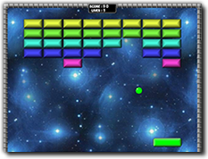

Tutorial
Page 1 of 13
Introduction
Welcome to GameMaker! This tutorial will show you how to create your first game using the Game Maker Language and will take about 30 minutes to complete. We hope that it will teach
you the important basics of working with GameMaker, as well as give you the foundations of a game with which to experimant with and continue to improve while learning all about this
incredible programming tool.
Since this is a tutorial, we are going to re-create a classic arcade game that everyone knows... Breakout! By the end of this tutorial you will have created a player controlled bat, a bouncing ball,
bricks, walls, and a number of other things, all the while learning how GameMaker works, how to use the GameMaker Language (GML) to code and (we hope!) having fun in the process!

The game you are going to make will use some special resources that we have created for especially for this tutorial. To find them on your computer, please go to the top of the GameMaker screen
and select the Help drop-down menu. You will see an option marked Open Project in explorer. If you select that then the standard file explorer will open showing the contents of your
GameMaker project directory, and there you can browse to "Assets" and all resources are stored there in the "Graphics" and "Sounds" folders.
It is also recommended that you have the manual open (press "f1" to open it) so that you can read up in more detail about some of the functions used in this tutorial.
Click on the Next button to go to the next page of the tutorial.